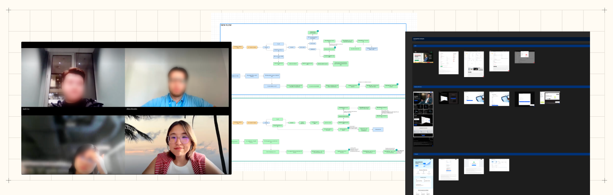
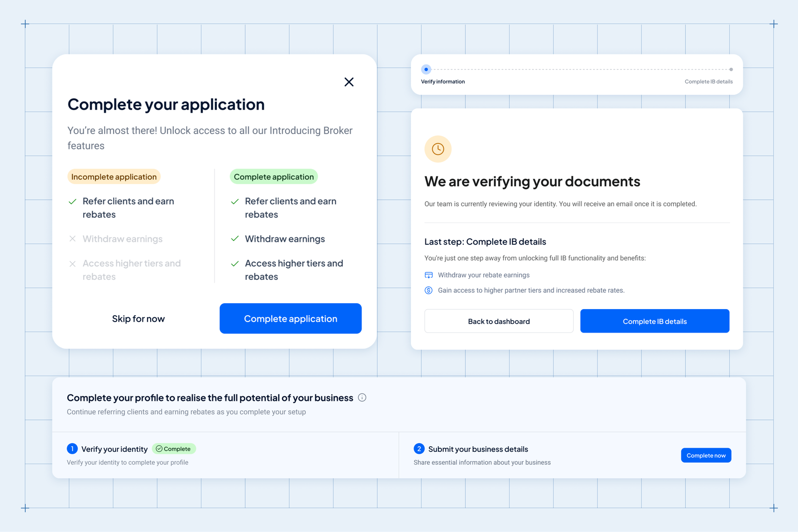
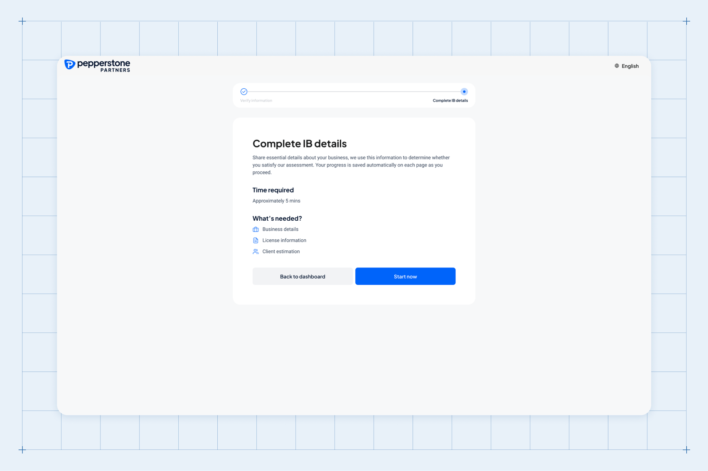
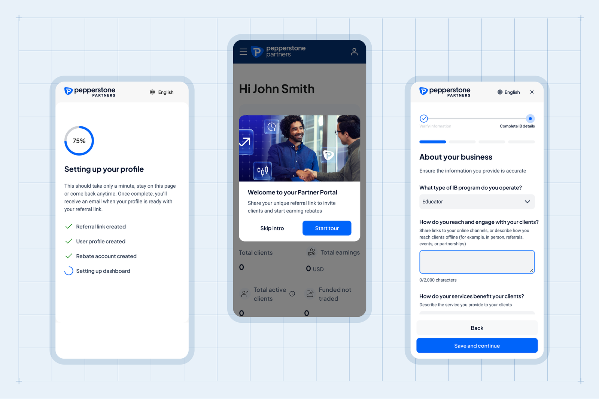

From days to minutes: Redesigning IB onboarding for faster activation
Pepperstone Partnership Program uses a revenue-sharing model designed for educators, signal providers, and trading communities to monetise their networks. Partners earn volume-based rebates and get dedicated support to grow their referral business.
The IB onboarding flow was long, high-friction, and heavily dependent on manual follow-ups from the ops team.
Partners had to complete an all-or-nothing process before they could start referring clients, which caused drop-off and delayed activation from minutes to days.
“This process works, but it’s highly manual and back-and-forth between sales and partners — especially since even opening a trading account is a hassle for the client”
Business goals
Grow active IBs with frictionless onboarding
Reduce redundant steps, lower onboarding friction and enabling faster referrals
Reduce time-to-activation
Automate KYC and account set up to reduce manual ops review dependency and number of follow-ups required
Due diligence at the right time
Moving due diligence to the right moments, not removing it
Understand current state

Sales & Ops team interview
Interviewed sales, account managers, and ops to understand each step’s purpose and operational cost. Identified where information was duplicated, where checks were delayed, and where partners got stuck.
Scenario mapping with PMs
Mapped the new flow against the legacy flow to ensure we still covered edge cases (business type, COR, new vs. existing user). Defined which steps were required before vs. after activation.
Competitor Benchmarking
Benchmarking competitor platform to compare onboarding patterns and expectation-setting across their journeys.
Design principles

-
Clarity on the next step
After each step, partners should know exactly what to do next, rather than being left to guess or wait to be contacted.
-
Set expectations when waiting is real
If review takes time, show how long and why.
-
Make long forms feel doable
Longer sections are split into labelled sub-steps with visible progress.
-
Design for mobile-first completion
~19% of partners primarily use mobile, so every step must work end-to-end on mobile.
Solution
Immediate activation after registration
Partners can start referring with minimal information. This shifts onboarding from “complete everything first” to “start now, verify progressively.”
Guided onboarding (tour + persistent checklist)
Persistent benefit-driven messaging to encourage partners to complete the rest of the required step.

Split the form into 3 sections partners can finish over time
The onboarding form is divided into three parts that can be completed in separate sittings. Each section provides time estimate and required info for clear expectation setting.

Full mobile experience
We delivered equal experience for mobile for partners on-the-go
